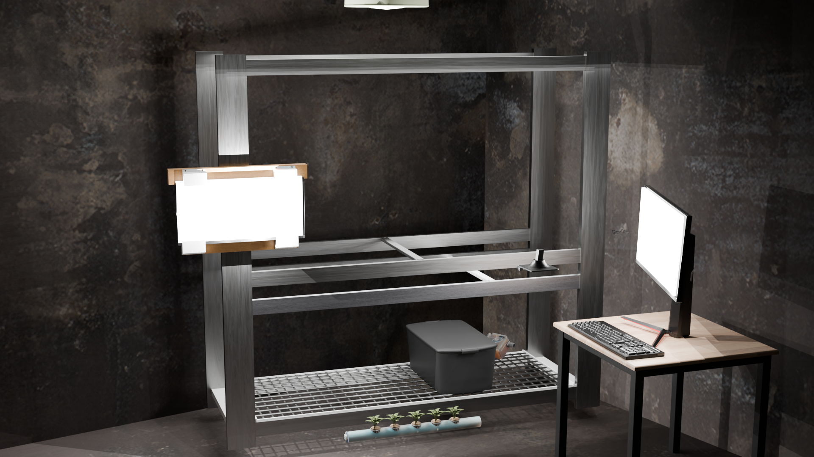

OM PROJEKTET / NTI UPPSALA
En idé som
får växa.
NTI Hydroponics är ett elevdrivet projekt om teknik och hydroponisk odling.
FRÅN TEORI TILL PRAKTIK
Nyfikenhet som drivkraft.
Projektet startades av elever i TE22a och TE22b vid NTI Gymnasiet i Uppsala. Ambitionen är att kombinera teori med praktik och utforska lösningar för hållbar växtodling.
Arbetet fokuserar på NFT-metoden, Nutrient Film Technique, och på att bygga ett hydroponiskt odlingssystem. Webbplatsen samlar projektets dokumentation och ger plats åt en livestream av odlingen.
Beskrivningen bygger på projektets befintliga presentation. Klassbeteckningarna hör till projektets ursprung, inte en bekräftelse på vilka som arbetar med det i dag.

PROJEKTETS AMBITIONER
Utforska. Bygga. Dela.
01Utveckla en hydroponisk odling
Undersöka odling utan traditionell jord och arbeta med NFT-metoden. Det är projektets mål, inte ett påstående om uppmätta resultat.
02Främja hållbarhet och innovation
Kombinera teknik med ambitionen att hitta hållbara odlingslösningar.
03Dokumentera och dela kunskap
Samla erfarenheter, skisser och lösningar så att andra kan ta del av arbetet.